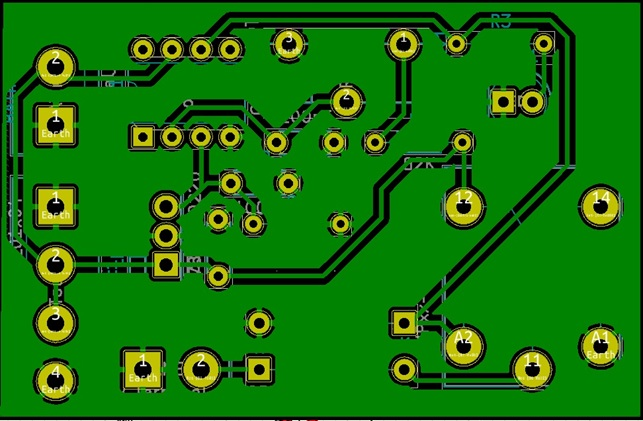
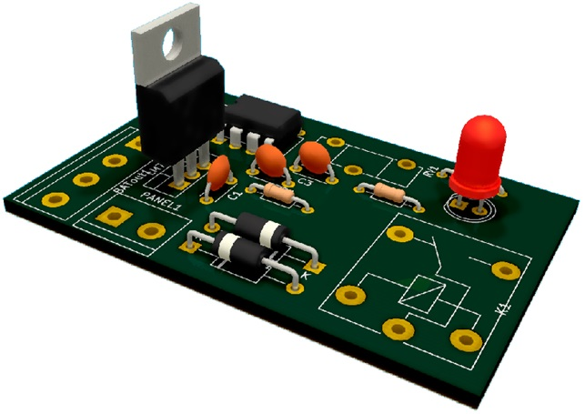
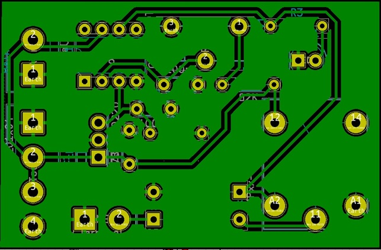
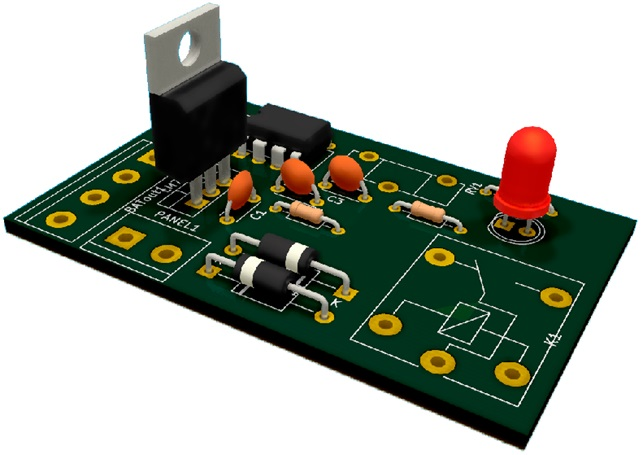

Este proyecto consiste en un vehículo acuático diseñado para recolectar los desechos flotantes de ríos. Nuestro objetivo es reducir la contaminación de las aguas y concientizar sobre la contaminación causada por los residuos.
Actualmente estamos trabajando en un prototipo de tamaño reducido. No obstante, nuestro objetivo es que una vez que este sea funcional, podamos producir, este proyecto, en una escala más grande para poder recolectar mayor cantidad de basura. Este sistema podría ser utilizado por el Estado para mantener limpios todos los ríos de Argentina
Diversos censos realizados para determinar los materiales de la basura en las costas argentinas encontraron que el 82% corresponde a residuos plásticos. Los principales residuos detectados fueron: bolsas plásticas, colillas de cigarrillos, restos plásticos, restos de nylon, tapitas y botellas plásticas.
En la zona costera del Río de la Plata, los plásticos representan el 44% del total de los residuos pesados, mientras que las bolsas plásticas el 30% y las latas el 9%. Los residuos encontrados en el fondo del río muestran una composición similar en cuanto a los principales ítems encontrados: 55% bolsas plásticas, 22% plásticos, 5% latas y 18% del total está compuesto de residuos pesados sin poder clasificar.
En las costas de los ríos más contaminados, los plásticos representan el 45% del total. En los fondos de dichos ríos se encuentra una composición similar, en el que más del 75% son plásticos o productos derivados de este, y el resto son metales y otros desperdicios sin especificar.
Gracias a nuestro sistema de extracción de los elementos que se encuentran en la superficie de los ríos, podríamos no solo limpiar la superficie, sino también disminuir en gran medida la cantidad de basura que -de no ser extraída- empezaría a acumularse en el fondo del agua o llegaría al mar y el océano.
Además del gran impacto que este proyecto generaría en el medio ambiente, también buscamos concientizar a las personas sobre los residuos que arrojan al agua. Si trabajamos todos juntos, podemos reducir la contaminación de forma drástica

Somos un grupo de siete alumnos de la “IMPA” (E.E.S.T. N7 “T.R.Q.”) que buscamos brindar nuestro mayor apoyo para atacar un problema tan serio como lo es la contaminación mediante nuestro proyecto institucional.Entre los logros más destacables de los miembros del grupo se encuentran:
● Participación feria técnica de la institución “ríos de vida”
● Participación feria de la Universidad Tecnológica Nacional
● Reconocimiento de la universidad por el proyecto presentado
● Participación de la olimpiada nacional “ONIET” de la Universidad Blas Pascal
■ Primer lugar en ElectroSaber II
■ Segundo lugar en prototipos II
El navío estará en una estación donde se cargará utilizando energía solar, lo que reducirá al máximo la contaminación y no generará ningún tipo de desecho. La estación estará equipada con barreras para evitar que la corriente se lleve el vehículo.
Cuando las baterías estén cargadas, el barco zarpará. Este proyecto contará con un piloto automático que controle todos los sistemas del navío; por este motivo, no se necesitará una persona que lo maneje. De todas formas, contará con un servidor del cual se podrá realizar un análisis de todos los sistemas del barco para corroborar que todo funcione correctamente.
Se deberá establecer una ruta para que el piloto automático pueda seguir. Una vez en movimiento, el barco levantará la basura flotante con ayuda de un cangilón y la almacenará en un depósito en la parte trasera del vehículo. Cuando finalice el recorrido, una persona deberá remover el depósito con la basura y el navío volverá a su estación de carga.
“EcoBoat” utilizará un panel solar para cargar una batería. El usuario deberá establecer una ruta para que el vehículo flotante realice la limpieza. Este proyecto contará con un GPS para determinar su ubicación y mediante programación se establecerán una serie de puntos (en coordenadas) a seguir dependiendo de la ruta determinada anteriormente. De esta forma, se actuará el motor y el timón del barco para moverlo en la dirección correcta. También contará con sensores ultrasónicos para evitar choques contra los bordes del río (debido a que el GPS tiene un rango de precisión de 2,5m), además de sondas para determinar si el nivel del agua es suficiente para navegar y si hay barcos cerca (en este caso el barco simplemente se detendría).
Con ayuda de un cangilón, el barco levantará la basura del agua y la arrojará en un contenedor. Cuando el barco llegue al final de su recorrido, la basura se retirará de forma manual y EcoBoat regresará a la estación de carga.
Este proyecto además contará con un sistema de diagnóstico en tiempo real de todos los sistemas del barco. Esto se podrá visualizar en una cómoda interfaz gráfica desde una estación de control remota a la ruta a recorrer por el vehículo.
Aquí es donde se encuentra el elemento de flotabilidad y la base del proyecto, para esto se tuvo en cuenta el diseño de los catamaranes. La forma de estos es la más adecuadas ya que nos permite poder ubicar la cinta transportadora en el centro y recoger la basura de una forma más eficiente.
Como base de flotabilidad se encuentran dos flotadores de kayak, donde estos aguantan todo el peso (la cinta transportadora, el tacho con la basura, etc).
Los flotadores se encontrarán separados entre sí, unos 100cm de un centro al otro centro del flotador; y en la parte superior hay una placa de fenolico donde se apoyarán todos los elementos del proyecto. La placa responderá a:
● Largo: 104 cm
● Ancho 125 cm
● abertura del centro: 40 cm
Cabe destacar que las placas de fenólico se encuentran hechas de madera rustica, con lo cual el agua no sería un problema. Esta no se va a pudrir con el tiempo y tiene una gran durabilidad.
La Cinta transportadora juega un papel muy importante en el proyecto; es la encargada de juntar toda la basura que se encuentra en su camino. Durante el recorrido del EcoBoat, la cinta funcionará en todo momento, juntando toda la basura que se encuentra en su camino. Con la ayuda de los cangilones, que están añadidos a la cinta, podrá recoger los residuos flotantes y dirigirlos al tacho de basura ubicado en el otro extremo
La cinta se encuentra construida por varias partes:
● Rodillo motriz: este rodillo está acoplado a un motor donde hará que la cinta se mueva
● Rodillo de reenvío: es un rodillo añadido a la estructura, que se encuentra loco. Es donde la cinta pega la vuelta.
● Estructura: es una estructura de hierro que le da la forma a la cinta transportadora
● Cinta: es donde van añadido los cangilones y transmite el movimiento del rodillo motriz deslizando con todo el largo de la estructura
● Cangilones: son los encargados de recoger toda la basura que flota en el agua
● Motor: transmite el movimiento al rodillo motriz
Circuito Regulador de Tensión: este circuito se utiliza para alimentar el microcontrolador.
Ya que la batería es de 12v y el micro se debe alimentar con 5v, utilizamos el integrado LM7805, configurado con dos capacitores y un diodo, para regular la tensión. También, la placa, cuenta con un LED para verificar el funcionamiento de la misma.


Circuito Regulador de Carga: este circuito se utiliza para cortar la carga del panel solar una vez que la batería está llena.
Para lograr esto, utilizamos un operacional en modo comparador. A la entrada no inversora del operacional conectamos un regulador de tensión parecido al del circuito anterior que provoca que siempre haya 5V en ese pin. Para la entrada inversora tenemos un divisor de tensión regulado con un potenciómetro. Cuando la batería tiene su carga máxima la tensión que entrega será de 14,9V; el divisor de tensión está preparado para que a este valor haya más de 5V en la entrada inversora del operacional, pero cuando hay menos de 14,9V en la entrada inversora habrá una tensión menor a 5V.
De esta forma se logra que cuando la tensión en la batería es la máxima no haya tensión a la salida del operacional, pero en cuanto esta disminuya si.
En la salida del operacional hay un LED y un relé, el cual controlará la salida del panel solar. El diodo D3 está para evitar que la batería alimente al panel solar cuando éste no entregue corriente debido a que está nublado o es de noche
Los 4 pines de arriba a la izquierda son para conectar las salidas de la batería.
 



Circuito de Control de Marcha: este circuito se utiliza para controlar el giro de los motores (que funcionan con 12V) con la tensión del micro controlador (que entrega una tensión máxima de 5V). En este proyecto hay 3 motores: uno de propulsión, otro para mover el cangilón y otro para la dirección del barco (motor paso a paso).
Tanto el motor de propulsión como el motor del cangilón funcionan con un puente H: estos circuitos reciben dos señales del microcontrolador (una para cada sentido de giro). Cuando enviamos una señal del micro, los transistores BJT conectados al mismo entran en zona de saturación, lo que genera que la tensión que hay en el transistor tienda a 0. De esta forma, la tensión de la batería (12V) cae en su mayor parte sobre las resistencias conectadas al colector del transistor en el caso de los transistores de arriba y las resistencias conectadas al emisor en el caso de los transistores de abajo. Estas resistencias de 10k están en paralelo con la tensión Vgs de los MOSFETs. Entonces cuando la tensión en las resistencias supera la tensión de umbral de los MOSFETs (aproximadamente 5V, pero aguantan hasta 16V) estos entran en zona de saturación, provocando que tengan muy poca caída de tensión entre sus terminales drain y source y por ende, casi toda la tensión cae en el motor.
Una de las señales del micro pone en saturación el transistor de arriba a la izquierda y el de abajo a la derecha (Q1 y Q4 en el motor de propulsión o Q5 y Q8 en el motor del cangilón) provocando que gire en un sentido determinado; y el otro conector del microcontrolador activa los otros dos transistores (Q3 y Q2 en el motor de propulsión o Q7 y Q6 en el motor del cangilón) generando el sentido de giro contrario.

Es importante mencionar que los transistores MOSFET de arriba (los impares) son transistores de canal P y los de abajo (los pares) son transistores de canal N. La diferencia es que los de tipo P se accionan con una tensión negativa entre gate y source y la corriente fluye desde source hasta drain. En cambio los de canal N se accionan con una tensión positiva entre gate y source y la corriente fluye desde el drain hasta el source.
El motor paso a paso (motor de dirección) funciona un poco diferente. Elegimos este motor porque brinda una mayor precisión cuando se trabaja con ángulos. Los motores paso a paso (a grandes rasgos) funcionan con una serie de bobinas y un imán en el centro. Las bobinas se van accionando de a 2 a la vez haciendo mover al imán a la posición deseada. Entonces nuevamente para poder accionar el motor que requiere 12V con el micro que ofrece 5V se utiliza un integrado que contiene una serie de triacs (que funcionan de manera parecida al puente H) para alimentar las bobinas del motor paso a paso.
Para la impresión de la placa (PCB) utilizamos borneras para conectar los motores de propulsión y del cangilón y conectores molex para las conexiones con el microcontrolador y con el motor de dirección. Además utilizamos pistas de 1mm ya que esta placa maneja corrientes bastante grandes.